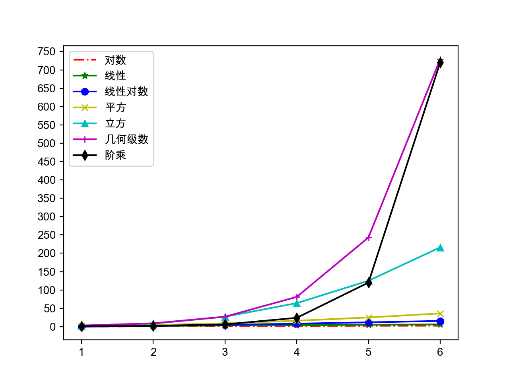

16.Python语言进阶
Python语言进阶
重要知识点
prices = {
'AAPL' : 191.88 ,
'GOOG' : 1186.96 ,
'IBM' : 149.24 ,
'ORCL' : 48.44 ,
'ACN' : 166.89 ,
'FB' : 208.09 ,
'SYMC' : 21.29
}
# 用股票价格大于100元的股票构造一个新的字典
prices2 = { key : value for key , value in prices . items () if value > 100 }
print ( prices2 )
说明：生成式（推导式）可以用来生成列表、集合和字典。
names = [ '关羽' , '张飞' , '赵云' , '马超' , '黄忠' ]
courses = [ '语文' , '数学' , '英语' ]
# 录入五个学生三门课程的成绩
# 错误 - 参考http://pythontutor.com/visualize.html#mode=edit
# scores = [[None] * len(courses)] * len(names)
# 上面这种错误写法导致五个人每门科目成绩都一模一样
scores = [[ None ] * len ( courses ) for _ in range ( len ( names ))]
for row , name in enumerate ( names ):
for col , course in enumerate ( courses ):
scores [ row ][ col ] = float ( input ( f '请输入 { name } 的 { course } 成绩: ' ))
print ( scores )
Python Tutor - VISUALIZE CODE AND GET LIVE HELP
"""
从列表中找出最大的或最小的N个元素
堆结构(大根堆/小根堆)
"""
import heapq
list1 = [ 34 , 25 , 12 , 99 , 87 , 63 , 58 , 78 , 88 , 92 ]
list2 = [
{ 'name' : 'IBM' , 'shares' : 100 , 'price' : 91.1 },
{ 'name' : 'AAPL' , 'shares' : 50 , 'price' : 543.22 },
{ 'name' : 'FB' , 'shares' : 200 , 'price' : 21.09 },
{ 'name' : 'HPQ' , 'shares' : 35 , 'price' : 31.75 },
{ 'name' : 'YHOO' , 'shares' : 45 , 'price' : 16.35 },
{ 'name' : 'ACME' , 'shares' : 75 , 'price' : 115.65 }
]
print ( heapq . nlargest ( 3 , list1 ))
print ( heapq . nsmallest ( 3 , list1 ))
print ( heapq . nlargest ( 2 , list2 , key = lambda x : x [ 'price' ]))
print ( heapq . nlargest ( 2 , list2 , key = lambda x : x [ 'shares' ]))
"""
迭代工具模块
"""
import itertools
# 产生ABCD的全排列
itertools . permutations ( 'ABCD' )
# 产生ABCDE的五选三组合
itertools . combinations ( 'ABCDE' , 3 )
# 产生ABCD和123的笛卡尔积
itertools . product ( 'ABCD' , '123' )
# 产生ABC的无限循环序列
itertools . cycle (( 'A' , 'B' , 'C' ))
常用的工具类：
namedtuple：命令元组，它是一个类工厂，接受类型的名称和属性列表来创建一个类。deque：双端队列，是列表的替代实现。Python中的列表底层是基于数组来实现的，而deque底层是双向链表，因此当你需要在头尾添加和删除元素时，deque会表现出更好的性能，渐近时间复杂度为\(O(1)\) 。Counter：dict的子类，键是元素，值是元素的计数，它的most_common()方法可以帮助我们获取出现频率最高的元素。Counter和dict的继承关系我认为是值得商榷的，按照CARP原则，Counter跟dict的关系应该设计为关联关系更为合理。OrderedDict：dict的子类，它记录了键值对插入的顺序，看起来既有字典的行为，也有链表的行为。defaultdict：类似于字典类型，但是可以通过默认的工厂函数来获得键对应的默认值，相比字典中的setdefault()方法，这种做法更加高效。
"""
找出序列中出现次数最多的元素
"""
from collections import Counter
words = [
'look' , 'into' , 'my' , 'eyes' , 'look' , 'into' , 'my' , 'eyes' ,
'the' , 'eyes' , 'the' , 'eyes' , 'the' , 'eyes' , 'not' , 'around' ,
'the' , 'eyes' , "don't" , 'look' , 'around' , 'the' , 'eyes' ,
'look' , 'into' , 'my' , 'eyes' , "you're" , 'under'
]
counter = Counter ( words )
print ( counter . most_common ( 3 ))
数据结构和算法
算法：解决问题的方法和步骤
评价算法的好坏：渐近时间复杂度和渐近空间复杂度。
渐近时间复杂度的大O标记：
\(O(c)\) - 常量时间复杂度 - 布隆过滤器 / 哈希存储\(O(log_2n)\) - 对数时间复杂度 - 折半查找（二分查找）\(O(n)\) - 线性时间复杂度 - 顺序查找 / 计数排序\(O(n*log_2n)\) - 对数线性时间复杂度 - 高级排序算法（归并排序、快速排序）\(O(n^2)\) - 平方时间复杂度 - 简单排序算法（选择排序、插入排序、冒泡排序）\(O(n^3)\) - 立方时间复杂度 - Floyd算法 / 矩阵乘法运算\(O(2^n)\) - 几何级数时间复杂度 - 汉诺塔\(O(n!)\) - 阶乘时间复杂度 - 旅行经销商问题 - NPC

排序算法（选择、冒泡和归并）和查找算法（顺序和折半）
def select_sort ( items , comp = lambda x , y : x < y ):
"""简单选择排序"""
items = items [:]
for i in range ( len ( items ) - 1 ):
min_index = i
for j in range ( i + 1 , len ( items )):
if comp ( items [ j ], items [ min_index ]):
min_index = j
items [ i ], items [ min_index ] = items [ min_index ], items [ i ]
return items
def bubble_sort ( items , comp = lambda x , y : x > y ):
"""冒泡排序"""
items = items [:]
for i in range ( len ( items ) - 1 ):
swapped = False
for j in range ( len ( items ) - 1 - i ):
if comp ( items [ j ], items [ j + 1 ]):
items [ j ], items [ j + 1 ] = items [ j + 1 ], items [ j ]
swapped = True
if not swapped :
break
return items
def bubble_sort ( items , comp = lambda x , y : x > y ):
"""搅拌排序(冒泡排序升级版)"""
items = items [:]
for i in range ( len ( items ) - 1 ):
swapped = False
for j in range ( len ( items ) - 1 - i ):
if comp ( items [ j ], items [ j + 1 ]):
items [ j ], items [ j + 1 ] = items [ j + 1 ], items [ j ]
swapped = True
if swapped :
swapped = False
for j in range ( len ( items ) - 2 - i , i , - 1 ):
if comp ( items [ j - 1 ], items [ j ]):
items [ j ], items [ j - 1 ] = items [ j - 1 ], items [ j ]
swapped = True
if not swapped :
break
return items
def merge ( items1 , items2 , comp = lambda x , y : x < y ):
"""合并(将两个有序的列表合并成一个有序的列表)"""
items = []
index1 , index2 = 0 , 0
while index1 < len ( items1 ) and index2 < len ( items2 ):
if comp ( items1 [ index1 ], items2 [ index2 ]):
items . append ( items1 [ index1 ])
index1 += 1
else :
items . append ( items2 [ index2 ])
index2 += 1
items += items1 [ index1 :]
items += items2 [ index2 :]
return items
def merge_sort ( items , comp = lambda x , y : x < y ):
return _merge_sort ( list ( items ), comp )
def _merge_sort ( items , comp ):
"""归并排序"""
if len ( items ) < 2 :
return items
mid = len ( items ) // 2
left = _merge_sort ( items [: mid ], comp )
right = _merge_sort ( items [ mid :], comp )
return merge ( left , right , comp )
def seq_search ( items , key ):
"""顺序查找"""
for index , item in enumerate ( items ):
if item == key :
return index
return - 1
def bin_search ( items , key ):
"""折半查找"""
start , end = 0 , len ( items ) - 1
while start <= end :
mid = ( start + end ) // 2
if key > items [ mid ]:
start = mid + 1
elif key < items [ mid ]:
end = mid - 1
else :
return mid
return - 1
常用算法：
穷举法 - 又称为暴力破解法，对所有的可能性进行验证，直到找到正确答案。
贪婪法 - 在对问题求解时，总是做出在当前看来最好的选择，不追求最优解，快速找到满意解。
分治法 - 把一个复杂的问题分成两个或更多的相同或相似的子问题，再把子问题分成更小的子问题，直到可以直接求解的程度，最后将子问题的解进行合并得到原问题的解。
回溯法 - 回溯法又称为试探法，按选优条件向前搜索，当搜索到某一步发现原先选择并不优或达不到目标时，就退回一步重新选择。
动态规划 - 基本思想也是将待求解问题分解成若干个子问题，先求解并保存这些子问题的解，避免产生大量的重复运算。
穷举法例子：百钱百鸡和五人分鱼。
# 公鸡5元一只 母鸡3元一只 小鸡1元三只
# 用100元买100只鸡 问公鸡/母鸡/小鸡各多少只
for x in range ( 20 ):
for y in range ( 33 ):
z = 100 - x - y
if 5 * x + 3 * y + z // 3 == 100 and z % 3 == 0 :
print ( x , y , z )
# A、B、C、D、E五人在某天夜里合伙捕鱼 最后疲惫不堪各自睡觉
# 第二天A第一个醒来 他将鱼分为5份 扔掉多余的1条 拿走自己的一份
# B第二个醒来 也将鱼分为5份 扔掉多余的1条 拿走自己的一份
# 然后C、D、E依次醒来也按同样的方式分鱼 问他们至少捕了多少条鱼
fish = 6
while True :
total = fish
enough = True
for _ in range ( 5 ):
if ( total - 1 ) % 5 == 0 :
total = ( total - 1 ) // 5 * 4
else :
enough = False
break
if enough :
print ( fish )
break
fish += 5
贪婪法例子：假设小偷有一个背包，最多能装20公斤赃物，他闯入一户人家，发现如下表所示的物品。很显然，他不能把所有物品都装进背包，所以必须确定拿走哪些物品，留下哪些物品。
名称
价格（美元）
重量（kg）
电脑
200
20
收音机
20
4
钟
175
10
花瓶
50
2
书
10
1
油画
90
9
"""
贪婪法：在对问题求解时，总是做出在当前看来是最好的选择，不追求最优解，快速找到满意解。
输入：
20 6
电脑 200 20
收音机 20 4
钟 175 10
花瓶 50 2
书 10 1
油画 90 9
"""
class Thing ( object ):
"""物品"""
def __init__ ( self , name , price , weight ):
self . name = name
self . price = price
self . weight = weight
@property
def value ( self ):
"""价格重量比"""
return self . price / self . weight
def input_thing ():
"""输入物品信息"""
name_str , price_str , weight_str = input () . split ()
return name_str , int ( price_str ), int ( weight_str )
def main ():
"""主函数"""
max_weight , num_of_things = map ( int , input () . split ())
all_things = []
for _ in range ( num_of_things ):
all_things . append ( Thing ( * input_thing ()))
all_things . sort ( key = lambda x : x . value , reverse = True )
total_weight = 0
total_price = 0
for thing in all_things :
if total_weight + thing . weight <= max_weight :
print ( f '小偷拿走了 { thing . name } ' )
total_weight += thing . weight
total_price += thing . price
print ( f '总价值: { total_price } 美元' )
if __name__ == '__main__' :
main ()
分治法例子：快速排序 。
"""
快速排序 - 选择枢轴对元素进行划分，左边都比枢轴小右边都比枢轴大
"""
def quick_sort ( items , comp = lambda x , y : x <= y ):
items = list ( items )[:]
_quick_sort ( items , 0 , len ( items ) - 1 , comp )
return items
def _quick_sort ( items , start , end , comp ):
if start < end :
pos = _partition ( items , start , end , comp )
_quick_sort ( items , start , pos - 1 , comp )
_quick_sort ( items , pos + 1 , end , comp )
def _partition ( items , start , end , comp ):
pivot = items [ end ]
i = start - 1
for j in range ( start , end ):
if comp ( items [ j ], pivot ):
i += 1
items [ i ], items [ j ] = items [ j ], items [ i ]
items [ i + 1 ], items [ end ] = items [ end ], items [ i + 1 ]
return i + 1
回溯法例子：骑士巡逻 。
"""
递归回溯法：叫称为试探法，按选优条件向前搜索，当搜索到某一步，发现原先选择并不优或达不到目标时，就退回一步重新选择，比较经典的问题包括骑士巡逻、八皇后和迷宫寻路等。
"""
import sys
import time
SIZE = 5
total = 0
def print_board ( board ):
for row in board :
for col in row :
print ( str ( col ) . center ( 4 ), end = '' )
print ()
def patrol ( board , row , col , step = 1 ):
if row >= 0 and row < SIZE and \
col >= 0 and col < SIZE and \
board [ row ][ col ] == 0 :
board [ row ][ col ] = step
if step == SIZE * SIZE :
global total
total += 1
print ( f '第 { total } 种走法: ' )
print_board ( board )
patrol ( board , row - 2 , col - 1 , step + 1 )
patrol ( board , row - 1 , col - 2 , step + 1 )
patrol ( board , row + 1 , col - 2 , step + 1 )
patrol ( board , row + 2 , col - 1 , step + 1 )
patrol ( board , row + 2 , col + 1 , step + 1 )
patrol ( board , row + 1 , col + 2 , step + 1 )
patrol ( board , row - 1 , col + 2 , step + 1 )
patrol ( board , row - 2 , col + 1 , step + 1 )
board [ row ][ col ] = 0
def main ():
board = [[ 0 ] * SIZE for _ in range ( SIZE )]
patrol ( board , SIZE - 1 , SIZE - 1 )
if __name__ == '__main__' :
main ()
动态规划例子：子列表元素之和的最大值。
说明：子列表指的是列表中索引（下标）连续的元素构成的列表；列表中的元素是int类型，可能包含正整数、0、负整数；程序输入列表中的元素，输出子列表元素求和的最大值，例如：
输入：1 -2 3 5 -3 2
输出：8
输入：0 -2 3 5 -1 2
输出：9
输入：-9 -2 -3 -5 -3
输出：-2
def main ():
items = list ( map ( int , input () . split ()))
overall = partial = items [ 0 ]
for i in range ( 1 , len ( items )):
partial = max ( items [ i ], partial + items [ i ])
overall = max ( partial , overall )
print ( overall )
if __name__ == '__main__' :
main ()
说明 ：这个题目最容易想到的解法是使用二重循环，但是代码的时间性能将会变得非常的糟糕。使用动态规划的思想，仅仅是多用了两个变量，就将原来\(O(N^2)\) 复杂度的问题变成了\(O(N)\) 。
函数的使用方式
items1 = list ( map ( lambda x : x ** 2 , filter ( lambda x : x % 2 , range ( 1 , 10 ))))
items2 = [ x ** 2 for x in range ( 1 , 10 ) if x % 2 ]
例子：输出函数执行时间的装饰器。
def record_time ( func ):
"""自定义装饰函数的装饰器"""
@wraps ( func )
def wrapper ( * args , ** kwargs ):
start = time ()
result = func ( * args , ** kwargs )
print ( f ' { func . __name__ } : { time () - start } 秒' )
return result
return wrapper
如果装饰器不希望跟print函数耦合，可以编写可以参数化的装饰器。
from functools import wraps
from time import time
def record ( output ):
"""可以参数化的装饰器"""
def decorate ( func ):
@wraps ( func )
def wrapper ( * args , ** kwargs ):
start = time ()
result = func ( * args , ** kwargs )
output ( func . __name__ , time () - start )
return result
return wrapper
return decorate
from functools import wraps
from time import time
class Record ():
"""通过定义类的方式定义装饰器"""
def __init__ ( self , output ):
self . output = output
def __call__ ( self , func ):
@wraps ( func )
def wrapper ( * args , ** kwargs ):
start = time ()
result = func ( * args , ** kwargs )
self . output ( func . __name__ , time () - start )
return result
return wrapper
说明 ：由于对带装饰功能的函数添加了@wraps装饰器，可以通过func.__wrapped__方式获得被装饰之前的函数或类来取消装饰器的作用。
例子：用装饰器来实现单例模式。
from functools import wraps
def singleton ( cls ):
"""装饰类的装饰器"""
instances = {}
@wraps ( cls )
def wrapper ( * args , ** kwargs ):
if cls not in instances :
instances [ cls ] = cls ( * args , ** kwargs )
return instances [ cls ]
return wrapper
@singleton
class President :
"""总统(单例类)"""
pass
提示 ：上面的代码中用到了闭包（closure），不知道你是否已经意识到了。还没有一个小问题就是，上面的代码并没有实现线程安全的单例，如果要实现线程安全的单例应该怎么做呢？
线程安全的单例装饰器。
from functools import wraps
from threading import RLock
def singleton ( cls ):
"""线程安全的单例装饰器"""
instances = {}
locker = RLock ()
@wraps ( cls )
def wrapper ( * args , ** kwargs ):
if cls not in instances :
with locker :
if cls not in instances :
instances [ cls ] = cls ( * args , ** kwargs )
return instances [ cls ]
return wrapper
提示 ：上面的代码用到了with上下文语法来进行锁操作，因为锁对象本身就是上下文管理器对象（支持__enter__和__exit__魔术方法）。在wrapper函数中，我们先做了一次不带锁的检查，然后再做带锁的检查，这样做比直接加锁检查性能要更好，如果对象已经创建就没有必须再去加锁而是直接返回该对象就可以了。
面向对象相关知识
例子：工资结算系统。
"""
月薪结算系统 - 部门经理每月15000 程序员每小时200 销售员1800底薪加销售额5%提成
"""
from abc import ABCMeta , abstractmethod
class Employee ( metaclass = ABCMeta ):
"""员工(抽象类)"""
def __init__ ( self , name ):
self . name = name
@abstractmethod
def get_salary ( self ):
"""结算月薪(抽象方法)"""
pass
class Manager ( Employee ):
"""部门经理"""
def get_salary ( self ):
return 15000.0
class Programmer ( Employee ):
"""程序员"""
def __init__ ( self , name , working_hour = 0 ):
self . working_hour = working_hour
super () . __init__ ( name )
def get_salary ( self ):
return 200.0 * self . working_hour
class Salesman ( Employee ):
"""销售员"""
def __init__ ( self , name , sales = 0.0 ):
self . sales = sales
super () . __init__ ( name )
def get_salary ( self ):
return 1800.0 + self . sales * 0.05
class EmployeeFactory :
"""创建员工的工厂（工厂模式 - 通过工厂实现对象使用者和对象之间的解耦合）"""
@staticmethod
def create ( emp_type , * args , ** kwargs ):
"""创建员工"""
all_emp_types = { 'M' : Manager , 'P' : Programmer , 'S' : Salesman }
cls = all_emp_types [ emp_type . upper ()]
return cls ( * args , ** kwargs ) if cls else None
def main ():
"""主函数"""
emps = [
EmployeeFactory . create ( 'M' , '曹操' ),
EmployeeFactory . create ( 'P' , '荀彧' , 120 ),
EmployeeFactory . create ( 'P' , '郭嘉' , 85 ),
EmployeeFactory . create ( 'S' , '典韦' , 123000 ),
]
for emp in emps :
print ( f ' { emp . name } : { emp . get_salary () : .2f } 元' )
if __name__ == '__main__' :
main ()
类与类之间的关系
is-a关系：继承
has-a关系：关联 / 聚合 / 合成
use-a关系：依赖
例子：扑克游戏。
"""
经验：符号常量总是优于字面常量，枚举类型是定义符号常量的最佳选择
"""
from enum import Enum , unique
import random
@unique
class Suite ( Enum ):
"""花色"""
SPADE , HEART , CLUB , DIAMOND = range ( 4 )
def __lt__ ( self , other ):
return self . value < other . value
class Card :
"""牌"""
def __init__ ( self , suite , face ):
"""初始化方法"""
self . suite = suite
self . face = face
def show ( self ):
"""显示牌面"""
suites = [ '♠︎' , '♥︎' , '♣︎' , '♦︎' ]
faces = [ '' , 'A' , '2' , '3' , '4' , '5' , '6' , '7' , '8' , '9' , '10' , 'J' , 'Q' , 'K' ]
return f ' { suites [ self . suite . value ] }{ faces [ self . face ] } '
def __repr__ ( self ):
return self . show ()
class Poker :
"""扑克"""
def __init__ ( self ):
self . index = 0
self . cards = [ Card ( suite , face )
for suite in Suite
for face in range ( 1 , 14 )]
def shuffle ( self ):
"""洗牌（随机乱序）"""
random . shuffle ( self . cards )
self . index = 0
def deal ( self ):
"""发牌"""
card = self . cards [ self . index ]
self . index += 1
return card
@property
def has_more ( self ):
return self . index < len ( self . cards )
class Player :
"""玩家"""
def __init__ ( self , name ):
self . name = name
self . cards = []
def get_one ( self , card ):
"""摸一张牌"""
self . cards . append ( card )
def sort ( self , comp = lambda card : ( card . suite , card . face )):
"""整理手上的牌"""
self . cards . sort ( key = comp )
def main ():
"""主函数"""
poker = Poker ()
poker . shuffle ()
players = [ Player ( '东邪' ), Player ( '西毒' ), Player ( '南帝' ), Player ( '北丐' )]
while poker . has_more :
for player in players :
player . get_one ( poker . deal ())
for player in players :
player . sort ()
print ( player . name , end = ': ' )
print ( player . cards )
if __name__ == '__main__' :
main ()
说明 ：上面的代码中使用了Emoji字符来表示扑克牌的四种花色，在某些不支持Emoji字符的系统上可能无法显示。
Python使用了自动化内存管理，这种管理机制以引用计数 为基础，同时也引入了标记-清除 和分代收集 两种机制为辅的策略。
typedef struct _object {
/* 引用计数 */
int ob_refcnt ;
/* 对象指针 */
struct _typeobject * ob_type ;
} PyObject ;
/* 增加引用计数的宏定义 */
#define Py_INCREF(op) ((op)->ob_refcnt++)
/* 减少引用计数的宏定义 */
#define Py_DECREF(op) \ //减少计数
if ( -- ( op ) -> ob_refcnt != 0 ) \
; \
else \
__Py_Dealloc (( PyObject * )( op ))
导致引用计数+1的情况：
对象被创建，例如a = 23
对象被引用，例如b = a
对象被作为参数，传入到一个函数中，例如f(a)
对象作为一个元素，存储在容器中，例如list1 = [a, a]
导致引用计数-1的情况：
对象的别名被显式销毁，例如del a
对象的别名被赋予新的对象，例如a = 24
一个对象离开它的作用域，例如f函数执行完毕时，f函数中的局部变量（全局变量不会）
对象所在的容器被销毁，或从容器中删除对象
引用计数可能会导致循环引用问题，而循环引用会导致内存泄露，如下面的代码所示。为了解决这个问题，Python中引入了“标记-清除”和“分代收集”。在创建一个对象的时候，对象被放在第一代中，如果在第一代的垃圾检查中对象存活了下来，该对象就会被放到第二代中，同理在第二代的垃圾检查中对象存活下来，该对象就会被放到第三代中。
# 循环引用会导致内存泄露 - Python除了引用技术还引入了标记清理和分代回收
# 在Python 3.6以前如果重写__del__魔术方法会导致循环引用处理失效
# 如果不想造成循环引用可以使用弱引用
list1 = []
list2 = []
list1 . append ( list2 )
list2 . append ( list1 )
以下情况会导致垃圾回收：
调用gc.collect()
gc模块的计数器达到阀值程序退出
如果循环引用中两个对象都定义了__del__方法，gc模块不会销毁这些不可达对象，因为gc模块不知道应该先调用哪个对象的__del__方法，这个问题在Python 3.6中得到了解决。
也可以通过weakref模块构造弱引用的方式来解决循环引用的问题。
魔法属性和方法（请参考《Python魔法方法指南》）
有几个小问题请大家思考：
自定义的对象能不能使用运算符做运算？
自定义的对象能不能放到set中？能去重吗？
自定义的对象能不能作为dict的键？
自定义的对象能不能使用上下文语法？
混入（Mixin）
例子：自定义字典限制只有在指定的key不存在时才能在字典中设置键值对。
class SetOnceMappingMixin :
"""自定义混入类"""
__slots__ = ()
def __setitem__ ( self , key , value ):
if key in self :
raise KeyError ( str ( key ) + ' already set' )
return super () . __setitem__ ( key , value )
class SetOnceDict ( SetOnceMappingMixin , dict ):
"""自定义字典"""
pass
my_dict = SetOnceDict ()
try :
my_dict [ 'username' ] = 'jackfrued'
my_dict [ 'username' ] = 'hellokitty'
except KeyError :
pass
print ( my_dict )
对象是通过类创建的，类是通过元类创建的，元类提供了创建类的元信息。所有的类都直接或间接的继承自object，所有的元类都直接或间接的继承自type。
例子：用元类实现单例模式。
import threading
class SingletonMeta ( type ):
"""自定义元类"""
def __init__ ( cls , * args , ** kwargs ):
cls . __instance = None
cls . __lock = threading . RLock ()
super () . __init__ ( * args , ** kwargs )
def __call__ ( cls , * args , ** kwargs ):
if cls . __instance is None :
with cls . __lock :
if cls . __instance is None :
cls . __instance = super () . __call__ ( * args , ** kwargs )
return cls . __instance
class President ( metaclass = SingletonMeta ):
"""总统(单例类)"""
pass
面向对象设计原则
单一职责原则 （S RP）- 一个类只做该做的事情（类的设计要高内聚）
开闭原则 （O CP）- 软件实体应该对扩展开发对修改关闭
依赖倒转原则（DIP）- 面向抽象编程（在弱类型语言中已经被弱化）
里氏替换原则（L SP） - 任何时候可以用子类对象替换掉父类对象
接口隔离原则（I SP）- 接口要小而专不要大而全（Python中没有接口的概念）
合成聚合复用原则（CARP） - 优先使用强关联关系而不是继承关系复用代码
最少知识原则（迪米特法则，LoD ）- 不要给没有必然联系的对象发消息
说明 ：上面加粗的字母放在一起称为面向对象的SOLID 原则。
GoF设计模式
创建型模式：单例、工厂、建造者、原型
结构型模式：适配器、门面（外观）、代理
行为型模式：迭代器、观察者、状态、策略
例子：可插拔的哈希算法（策略模式）。
class StreamHasher :
"""哈希摘要生成器"""
def __init__ ( self , alg = 'md5' , size = 4096 ):
self . size = size
alg = alg . lower ()
self . hasher = getattr ( __import__ ( 'hashlib' ), alg . lower ())()
def __call__ ( self , stream ):
return self . to_digest ( stream )
def to_digest ( self , stream ):
"""生成十六进制形式的摘要"""
for buf in iter ( lambda : stream . read ( self . size ), b '' ):
self . hasher . update ( buf )
return self . hasher . hexdigest ()
def main ():
"""主函数"""
hasher1 = StreamHasher ()
with open ( 'Python-3.7.6.tgz' , 'rb' ) as stream :
print ( hasher1 . to_digest ( stream ))
hasher2 = StreamHasher ( 'sha1' )
with open ( 'Python-3.7.6.tgz' , 'rb' ) as stream :
print ( hasher2 ( stream ))
if __name__ == '__main__' :
main ()
迭代器和生成器
迭代器是实现了迭代器协议的对象。
Python中没有像protocol或interface这样的定义协议的关键字。
Python中用魔术方法表示协议。
__iter__和__next__魔术方法就是迭代器协议。
class Fib ( object ):
"""迭代器"""
def __init__ ( self , num ):
self . num = num
self . a , self . b = 0 , 1
self . idx = 0
def __iter__ ( self ):
return self
def __next__ ( self ):
if self . idx < self . num :
self . a , self . b = self . b , self . a + self . b
self . idx += 1
return self . a
raise StopIteration ()
def fib ( num ):
"""生成器"""
a , b = 0 , 1
for _ in range ( num ):
a , b = b , a + b
yield a
生成器对象可以使用send()方法发送数据，发送的数据会成为生成器函数中通过yield表达式获得的值。这样，生成器就可以作为协程使用，协程简单的说就是可以相互协作的子程序。
def calc_avg ():
"""流式计算平均值"""
total , counter = 0 , 0
avg_value = None
while True :
value = yield avg_value
# yield 关键字使得函数能够暂停执行并返回 avg_value
# 同时，函数会接收外部传入的值（通过 send 方法）并赋值给 value
total , counter = total + value , counter + 1
avg_value = total / counter
gen = calc_avg () # 创建一个生成器对象 gen，调用 calc_avg 函数但不执行其代码。
next ( gen ) # 启动生成器，执行到 yield 语句，此时 avg_value 为 None，返回 None
print ( gen . send ( 10 )) # output: 10.0
print ( gen . send ( 20 )) # output: 15.0
print ( gen . send ( 30 )) # output: 20.0
并发编程
Python中实现并发编程的三种方案：多线程、多进程和异步I/O。并发编程的好处在于可以提升程序的执行效率以及改善用户体验；坏处在于并发的程序不容易开发和调试，同时对其他程序来说它并不友好。
多线程：Python中提供了Thread类并辅以Lock、Condition、Event、Semaphore和Barrier。Python中有GIL来防止多个线程同时执行本地字节码，这个锁对于CPython是必须的，因为CPython的内存管理并不是线程安全的，因为GIL的存在多线程并不能发挥CPU的多核特性。
"""
面试题：进程和线程的区别和联系？
进程 - 操作系统分配内存的基本单位 - 一个进程可以包含一个或多个线程
线程 - 操作系统分配CPU的基本单位
并发编程（concurrent programming）
1. 提升执行性能 - 让程序中没有因果关系的部分可以并发的执行
2. 改善用户体验 - 让耗时间的操作不会造成程序的假死
"""
import glob
import os
import threading
from PIL import Image
PREFIX = 'thumbnails'
def generate_thumbnail ( infile , size , format = 'PNG' ):
"""生成指定图片文件的缩略图"""
file , ext = os . path . splitext ( infile )
file = file [ file . rfind ( '/' ) + 1 :]
outfile = f ' { PREFIX } / { file } _ { size [ 0 ] } _ { size [ 1 ] } . { ext } '
img = Image . open ( infile )
img . thumbnail ( size , Image . ANTIALIAS )
img . save ( outfile , format )
def main ():
"""主函数"""
if not os . path . exists ( PREFIX ):
os . mkdir ( PREFIX )
for infile in glob . glob ( 'images/*.png' ):
for size in ( 32 , 64 , 128 ):
# 创建并启动线程
threading . Thread (
target = generate_thumbnail ,
args = ( infile , ( size , size ))
) . start ()
if __name__ == '__main__' :
main ()
多个线程竞争资源的情况。
"""
多线程程序如果没有竞争资源处理起来通常也比较简单
当多个线程竞争临界资源的时候如果缺乏必要的保护措施就会导致数据错乱
说明：临界资源就是被多个线程竞争的资源
"""
import time
import threading
from concurrent.futures import ThreadPoolExecutor
class Account ( object ):
"""银行账户"""
def __init__ ( self ):
self . balance = 0.0
self . lock = threading . Lock ()
def deposit ( self , money ):
# 通过锁保护临界资源
with self . lock :
new_balance = self . balance + money
time . sleep ( 0.001 )
self . balance = new_balance
def main ():
"""主函数"""
account = Account ()
# 创建线程池
pool = ThreadPoolExecutor ( max_workers = 10 )
futures = []
for _ in range ( 100 ):
future = pool . submit ( account . deposit , 1 )
futures . append ( future )
# 关闭线程池
pool . shutdown ()
for future in futures :
future . result ()
print ( account . balance )
if __name__ == '__main__' :
main ()
修改上面的程序，启动5个线程向账户中存钱，5个线程从账户中取钱，取钱时如果余额不足就暂停线程进行等待。为了达到上述目标，需要对存钱和取钱的线程进行调度，在余额不足时取钱的线程暂停并释放锁，而存钱的线程将钱存入后要通知取钱的线程，使其从暂停状态被唤醒。可以使用threading模块的Condition来实现线程调度，该对象也是基于锁来创建的，代码如下所示：
"""
多个线程竞争一个资源 - 保护临界资源 - 锁（Lock/RLock）
多个线程竞争多个资源（线程数>资源数） - 信号量（Semaphore）
多个线程的调度 - 暂停线程执行/唤醒等待中的线程 - Condition
"""
from concurrent.futures import ThreadPoolExecutor
from random import randint
from time import sleep
import threading
class Account :
"""银行账户"""
def __init__ ( self , balance = 0 ):
self . balance = balance
lock = threading . RLock ()
self . condition = threading . Condition ( lock )
def withdraw ( self , money ):
"""取钱"""
with self . condition :
while money > self . balance :
self . condition . wait ()
new_balance = self . balance - money
sleep ( 0.001 )
self . balance = new_balance
def deposit ( self , money ):
"""存钱"""
with self . condition :
new_balance = self . balance + money
sleep ( 0.001 )
self . balance = new_balance
self . condition . notify_all ()
def add_money ( account ):
while True :
money = randint ( 5 , 10 )
account . deposit ( money )
print ( threading . current_thread () . name ,
':' , money , '====>' , account . balance )
sleep ( 0.5 )
def sub_money ( account ):
while True :
money = randint ( 10 , 30 )
account . withdraw ( money )
print ( threading . current_thread () . name ,
':' , money , '<====' , account . balance )
sleep ( 1 )
def main ():
account = Account ()
with ThreadPoolExecutor ( max_workers = 15 ) as pool :
for _ in range ( 5 ):
pool . submit ( add_money , account )
for _ in range ( 10 ):
pool . submit ( sub_money , account )
if __name__ == '__main__' :
main ()
多进程：多进程可以有效的解决GIL的问题，实现多进程主要的类是Process，其他辅助的类跟threading模块中的类似，进程间共享数据可以使用管道、套接字等，在multiprocessing模块中有一个Queue类，它基于管道和锁机制提供了多个进程共享的队列。下面是官方文档上关于多进程和进程池的一个示例。
"""
多进程和进程池的使用
多线程因为GIL的存在不能够发挥CPU的多核特性
对于计算密集型任务应该考虑使用多进程
time python3 example22.py
real 0m11.512s
user 0m39.319s
sys 0m0.169s
使用多进程后实际执行时间为11.512秒，而用户时间39.319秒约为实际执行时间的4倍
这就证明我们的程序通过多进程使用了CPU的多核特性，而且这台计算机配置了4核的CPU
"""
import concurrent.futures
import math
PRIMES = [
1116281 ,
1297337 ,
104395303 ,
472882027 ,
533000389 ,
817504243 ,
982451653 ,
112272535095293 ,
112582705942171 ,
112272535095293 ,
115280095190773 ,
115797848077099 ,
1099726899285419
] * 5
def is_prime ( n ):
"""判断素数"""
if n % 2 == 0 :
return False
sqrt_n = int ( math . floor ( math . sqrt ( n )))
for i in range ( 3 , sqrt_n + 1 , 2 ):
if n % i == 0 :
return False
return True
def main ():
"""主函数"""
with concurrent . futures . ProcessPoolExecutor () as executor :
for number , prime in zip ( PRIMES , executor . map ( is_prime , PRIMES )):
print ( ' %d is prime: %s ' % ( number , prime ))
if __name__ == '__main__' :
main ()
重点 ：多线程和多进程的比较 。
以下情况需要使用多线程：
程序需要维护许多共享的状态（尤其是可变状态），Python中的列表、字典、集合都是线程安全的，所以使用线程而不是进程维护共享状态的代价相对较小。
程序会花费大量时间在I/O操作上，没有太多并行计算的需求且不需占用太多的内存。
以下情况需要使用多进程：
程序执行计算密集型任务（如：字节码操作、数据处理、科学计算）。
程序的输入可以并行的分成块，并且可以将运算结果合并。
程序在内存使用方面没有任何限制且不强依赖于I/O操作（如：读写文件、套接字等）。
异步处理：从调度程序的任务队列中挑选任务，该调度程序以交叉的形式执行这些任务，我们并不能保证任务将以某种顺序去执行，因为执行顺序取决于队列中的一项任务是否愿意将CPU处理时间让位给另一项任务。异步任务通常通过多任务协作处理的方式来实现，由于执行时间和顺序的不确定，因此需要通过回调式编程或者future对象来获取任务执行的结果。Python 3通过asyncio模块和await和async关键字（在Python 3.7中正式被列为关键字）来支持异步处理。
"""
异步I/O - async / await
"""
import asyncio
def num_generator ( m , n ):
"""指定范围的数字生成器"""
yield from range ( m , n + 1 )
# yield from 允许一个生成器将其部分操作委托给另一个生成器。这意味着
# 你可以在一个生成器函数中使用 yield from 来调用另一个生成器函数，并
# 直接获取其生成的值，而无需自己手动迭代。这里，range(m, n + 1) 是
# 一个内置的生成器函数，它返回一个迭代器，生成从 m 开始到 n 结束的整数序列。
# yield from range(m, n + 1) 等价于下列写法：
# for i in range(m, n + 1):
# yield i
async def prime_filter ( m , n ):
# async 关键字用于定义一个异步函数。异步函数是一种特殊的函数，它可以在
# 执行过程中暂停并允许其他任务执行，然后在稍后的时间点恢复执行。
"""素数过滤器"""
primes = []
for i in num_generator ( m , n ):
flag = True
for j in range ( 2 , int ( i ** 0.5 + 1 )):
if i % j == 0 :
flag = False
break
if flag :
print ( 'Prime =>' , i )
primes . append ( i )
await asyncio . sleep ( 0.001 ) # 使得函数暂停执行0.001秒，然后恢复执行。
# 这允许其他异步任务在这段时间内执行。
return tuple ( primes )
async def square_mapper ( m , n ):
"""平方映射器"""
squares = []
for i in num_generator ( m , n ):
print ( 'Square =>' , i * i )
squares . append ( i * i )
await asyncio . sleep ( 0.001 )
return squares
def main ():
"""主函数"""
loop = asyncio . get_event_loop ()
future = asyncio . gather ( prime_filter ( 2 , 100 ), square_mapper ( 1 , 100 ))
future . add_done_callback ( lambda x : print ( x . result ()))
loop . run_until_complete ( future )
loop . close ()
if __name__ == '__main__' :
main ()
说明 ：上面的代码使用get_event_loop函数获得系统默认的事件循环，通过gather函数可以获得一个future对象，future对象的add_done_callback可以添加执行完成时的回调函数，loop对象的run_until_complete方法可以等待通过future对象获得协程执行结果。
Python中有一个名为aiohttp的三方库，它提供了异步的HTTP客户端和服务器，这个三方库可以跟asyncio模块一起工作，并提供了对Future对象的支持。Python 3.6中引入了async和await来定义异步执行的函数以及创建异步上下文，在Python 3.7中它们正式成为了关键字。下面的代码异步的从5个URL中获取页面并通过正则表达式的命名捕获组提取了网站的标题。
import asyncio
import re
import aiohttp
PATTERN = re . compile ( r '\<title\>(?P<title>.*)\<\/title\>' )
async def fetch_page ( session , url ):
async with session . get ( url , ssl = False ) as resp :
return await resp . text ()
async def show_title ( url ):
async with aiohttp . ClientSession () as session :
html = await fetch_page ( session , url )
print ( PATTERN . search ( html ) . group ( 'title' ))
def main ():
urls = ( 'https://www.python.org/' ,
'https://git-scm.com/' ,
'https://www.jd.com/' ,
'https://www.taobao.com/' ,
'https://www.douban.com/' )
loop = asyncio . get_event_loop ()
cos = [ show_title ( url ) for url in urls ]
loop . run_until_complete ( asyncio . wait ( cos ))
loop . close ()
if __name__ == '__main__' :
main ()
重点 ：异步I/O与多进程的比较 。
当程序不需要真正的并发性或并行性，而是更多的依赖于异步处理和回调时，asyncio就是一种很好的选择。如果程序中有大量的等待与休眠时，也应该考虑asyncio，它很适合编写没有实时数据处理需求的Web应用服务器。
Python还有很多用于处理并行任务的三方库，例如：joblib、PyMP等。实际开发中，要提升系统的可扩展性和并发性通常有垂直扩展（增加单个节点的处理能力）和水平扩展（将单个节点变成多个节点）两种做法。可以通过消息队列来实现应用程序的解耦合，消息队列相当于是多线程同步队列的扩展版本，不同机器上的应用程序相当于就是线程，而共享的分布式消息队列就是原来程序中的Queue。消息队列（面向消息的中间件）的最流行和最标准化的实现是AMQP（高级消息队列协议），AMQP源于金融行业，提供了排队、路由、可靠传输、安全等功能，最著名的实现包括：Apache的ActiveMQ、RabbitMQ等。
要实现任务的异步化，可以使用名为Celery的三方库。Celery是Python编写的分布式任务队列，它使用分布式消息进行工作，可以基于RabbitMQ或Redis来作为后端的消息代理。
2024年12月15日 19:58:43
2024年12月15日 19:58:43